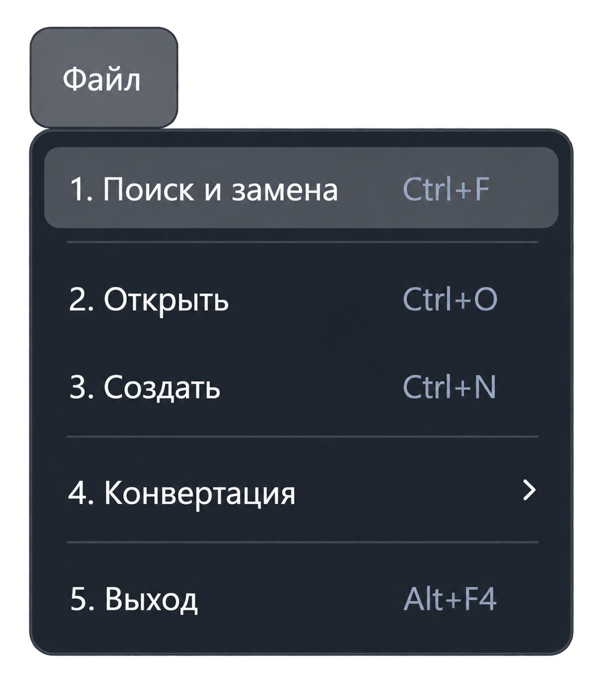

Функция «Поиск и замена»
Команда «Файл → Поиск и замена» или сочетание Ctrl + F открывает общую панель поиска под верхней панелью главного окна.

Как найти текст
- Переключитесь на документ или компонент, в котором нужно искать.
- Откройте панель командой меню или сочетанием Ctrl + F. Текст обычного выделения в редакторе подставляется в строку поиска.
- Введите запрос и выберите область поиска.
- Нажмите Enter или кнопку перехода. Для списка совпадений используйте «Найти все».
Доступны поиск с учётом регистра, поиск целого слова и регулярные выражения. Набор областей зависит от активного компонента; в редакторе предусмотрены текущий документ, все открытые документы и поиск в предварительно выделенном тексте.
Замена текста
Откройте настройки панели, чтобы показать поле замены и дополнительные параметры. Введите новый текст и выберите «Заменить» для текущего совпадения или «Заменить всё» для выбранной области.
Замена доступна в редактируемых текстовых документах. В режиме чтения и компонентах, поддерживающих только поиск, возможности замены ограничены.
Подробное описание панели
Элементы панели, области поиска, регулярные выражения, результаты и сочетания клавиш описаны в разделе «Поиск и замена» текстового редактора.